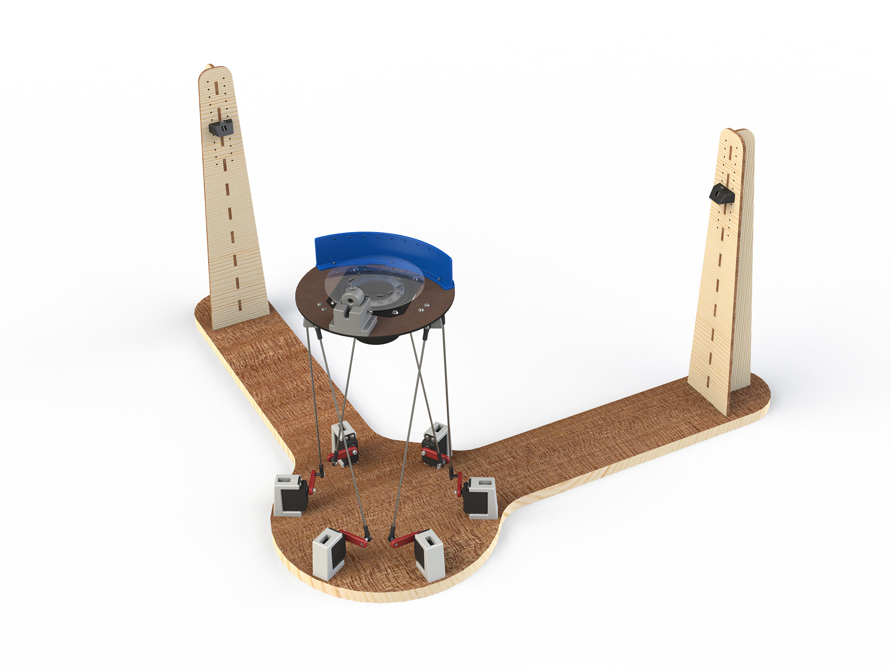

Bounce was a team project built for the Olin course Principles of Engineering. It is a robotic ping-pong ball bouncer that uses CV to track the ball, a Stewart platform to catch the ball, and a speaker timed by a laser sensing system to hit the ball back up. We have recorded it bouncing a ball for over 30 minutes before a lighting problem prevented the cameras from seeing the ball. I did most of the mechanical and electrical design and manufacturing and acted as liaison between the mechanical and computing parts of the project. The web site we made for the project, which has a more complete description, can be found here.
